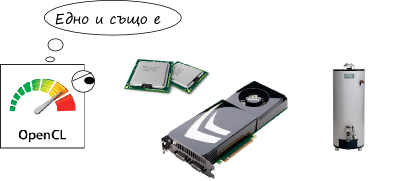
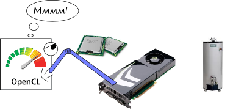
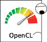
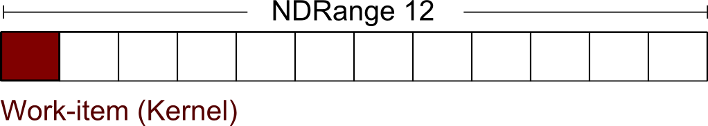
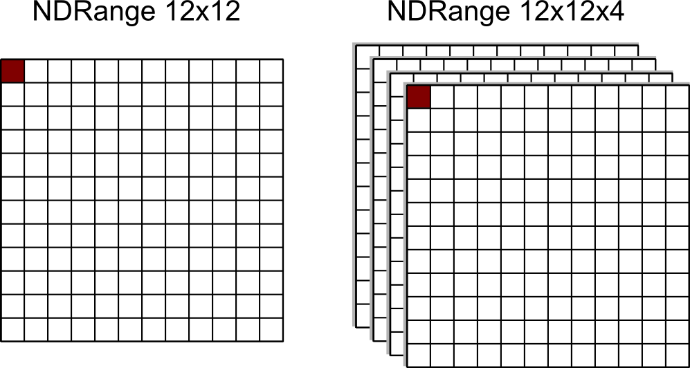
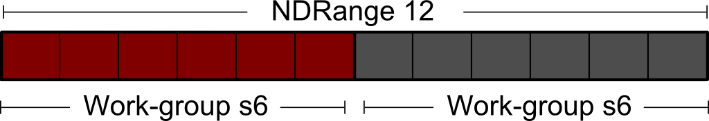
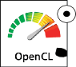
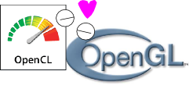

Как програмата ми стана 1500 пъти по-бърза
… а другата ми програма три пъти по-бавна
OpenFest 2014
Автор Борислав Станимиров
@natcbb
Аз?
- Програмист предимно на С++
- Програмист на игри
- ... и разни "low-level" работи
- Пиша разни open source проектчета
- Обичам всичко да работи супермегаултрабързо
Какво е тази лекция?
- Дъъ. Увод в OpenCL
- Ще видим какво е
- Ще видим какво прави добре
- ... и какво прави зле
- Няма да ни е страх от него
- Това може би би работело като лекция от курс
Какво наистина е OpenCL?
- Език за хетерогенни платформи
- Сиреч състоящи се от различни видове процесори
- Сиреч 99% от вашите компютри
- .. и 48.13% от вашите телефони
- Хетерогенността е в различните процесори
- CPU xN
- GPU xN
- Други боклици xN
- OpenCL ни дава унифициран поглед върху тях

Защо ми е това?
- Законът на Мур умира
- Спасението ни е паралелизацията
- Всички компютри имат многоядрени процесори
- Повечето компютри имат програмируеми видеокарти
- Някои компютри имат друг екзотичен хардуер
- OpenCL ни дава да цоцаме цялата тая изчислителна мощ, без да ни пука какво точно е отдолу

Други благинки
- Като OpenGL има интеграция с практически всеки език за програмиране
- Като OpenGL е мултиплатформен
- Като OpenGL е отворен стандарт
- Самият език прилича много на С
- ...или даже на С++ (чрез нестандартни разширения)
И по-конкретно
Помага ни да работим с паралелизъм по данни
Вметка: за съжаление хората не са добри в това

Как работи това?
- OpenCL за нашата програма е като шейдър за OpenGL
- Имаме код на нашия любим език за програмиране
- Пием Red Bull
- Попълваме входни буфери от данни
- Извикваме OpenCL код
- Той работи върху данните
- Пием бира
- Получаваме изхода
- Пием шампанско
Как по-точно работи това?
NDRange - интервалът в който нашата OpenCL програма работи
__kernel void sum(__global float* result, __global float* a, __global float* b)
{
uint i = get_global_id(0);
result[i] = a[i] + b[i]
}
__kernel
- Функцията, която ще викаме от нашата програма
- ...с параметри, които ние и даваме
- Можем да мислим за него като за нишка
- В нашата програма се нарича work-item
- Може да има не-kernel функции

2D данни
NDRange може да е с повече измерения (е... за сега 2 или 3)

Бригади

- Една група минава през един unit
- Споделят локална памет
- Размерностите им ТРЯБВА да са кратни на NDRange
Малко по-гъзарски пример
Тъп среден "blur"
__kernel void avg_blur(__global float* result, __global float* input)
{
uint x = get_global_id(0), y = get_global_id(1);
uint n = y*get_global_size(0) + x;
uint local_size = get_local_size(1) * get_local_size(0);
uint ln = get_local_id(1)*get_local_size(0) + get_local_id(0)
__local accum[local_size];
accum[ln] = input[n];
barrier(CLK_LOCAL_MEM_FENCE); // --------------------
result[i] = 0;
for(uint i=0; i<local_size; ++i)
result[i] += accum[i];
result[i] /= local_size;
}
Други неща за споменаване
- Входните данни на kernel могат да бъдат изображения
- Поддържат се векторни типове и swizzle
- Последните се закръгляват до следващата степен на двойката
- Ползвайте степени на двойката! Те са ваши приятели
Кога OpenCL работи зле?
- Естествено, когато имаме непаралелизируеми алгоритми
- Изчисления, които постоянно преджуркват данните
- Изчисления, които имат нужда от много синхронизиране
- Понякога имаме ограничения от самите устройства - например трансфер
- И понякога имаме (на пръв поглед) абсурдни случаи като този...
(На пръв поглед) Абсурден случай като този

Още за OpenGL
- Интегрира се перфектно
- Споделя данни
- Няма овърхед при съвместна работа

CUDA
- Решава горе-долу същите проблеми
- ...но само за NVIDIA
- ...и само за видеокарти
- ...и не е отворен стандарт
- ...но се интегрира по-гъзарски с кода
- ...и понякога е по-бърза
- ...но като цяло е същата работа
- Основните разлики са различни имена за еднакви неща
- Ако инвестираме в едното, ще минем лесно на другото
Заключителни думи
- Ако искате number crunching ползвайте OpenCL
- Лесни неща се пишат лесно
- Интернет е пълен до козирката с уроци и обяснения
- Експериментирайте